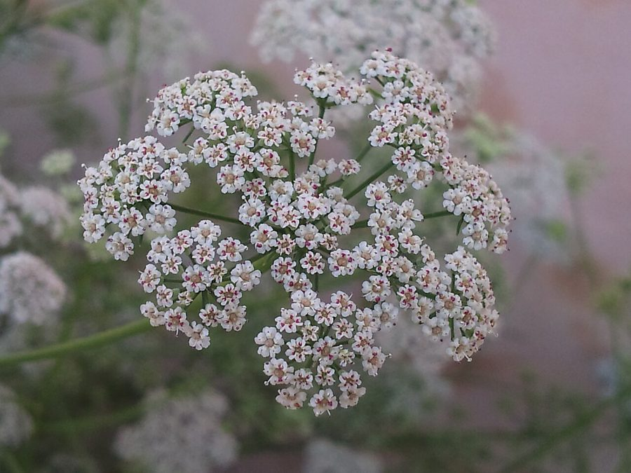

अजवाइनAjwain
Trachyspermum ammi · Apiaceae · FLR-0395

- Scientific name वैज्ञानिक नाम
- Trachyspermum ammi (L.) Sprague
- Family कुल
- Apiaceae
- Hindi हिंदी
- अजवाइन
- Local names स्थानीय नाम
- ajwain, ajowan, carom seed
- Status here यहाँ की स्थिति
- cultivated
- Movement आवागमन
- Resident, here all year
- Known from कहाँ दर्ज
- No online record yet in Uttar Pradesh; included from published range उत्तर प्रदेश से अभी कोई ऑनलाइन अभिलेख नहीं; प्रकाशित वितरण के आधार पर शामिल
- IUCN IUCN
- not evaluated
- Review समीक्षा
- not yet reviewed
When to look कब देखें
Present all year. साल भर मौजूद।
Uses and possibilities उपयोग और संभावनाएँ
“Traditional medicine” means a documented traditional use, not a claim that it works. Nothing on this page is medical advice.
Drawn from the documented uses in the profile below, where each is labelled traditional, current or a research lead. All uses →
अजवाइन / Ajwain
Trachyspermum ammi (L.) Sprague — Apiaceae
अजवाइन — अवध और पूर्वांचल के ग्रामीण अंचलों में उगाई जाने वाली शीतकालीन मसाले की फसल है। इसके छोटे, धारीदार, तीखे बीज और सफेद फूलों की छोटी छतरियां अपनी तेज अजवाइन जैसी थाइमोल की गंध और पाचक गुणों के लिए पूरे उत्तर भारत में प्रसिद्ध हैं।
Quick Identification त्वरित पहचान
| Feature | Description |
|---|---|
| Habit | Erect, highly branched, aromatic annual herb with striate, glabrous stems |
| Foliage | Multipinnate leaves dissected into linear, narrow, subulate ultimate segments |
| Aroma | Intense, sharp, hot, pungent thymol aroma released by all parts when bruised |
| Inflorescence | Small, terminal and axillary compound umbels with linear involucral bracts |
| Flowers | Minute, white or pale cream, five-petalled florets with exerted stamens |
| Fruit | Small, ovoid, grayish-brown cremocarp covered with minute, scaberulous hispid hairs |
Field tip: Look for bushy annual herbs with finely divided, thread-like green leaves in winter spice plots. Rubbing the tiny leaves or maturing seed heads releases an unmistakable, intense aroma of thymol (similar to thyme). In early spring, the plant is covered in a cloud of delicate, miniature white umbels.
हिंदी:
इसके पौधे पर सौंफ जैसे बारीक कटे हुए पत्ते लगते हैं जिन्हें मसलने पर तेज अजवाइन की गंध आती है।
बसंत में छोटी-छोटी छतरियों में सफेद रंग के नन्हे फूल खिलते हैं।
इसके छोटे धारीदार बीजों पर बारीक रोएं होते हैं और स्वाद में तीखापन होता है।
Morphology आकारिकी
Measurement not available in consulted sources. Ajwain is an erect, profusely branched annual herb cultivated across the plains for its aromatic fruits. The root system consists of a slender, fibrous taproot with numerous branching lateral feeder rootlets. The stem is erect, slender, finely striate, glabrous or minutely puberulous above, branching diffusely from the lower nodes to form a rounded, bushy canopy.
The leaves are alternate, distant, and multipinnately decompound. The lower basal leaves are petiolate, expanding at the base into narrow, sheathing petioles with scarious margins. The leaf blades are two- to three-pinnate, dissected into numerous slender, linear, filiform or narrowly subulate ultimate segments. The upper cauline leaves are smaller, sessile or subsessile, and less divided, grading into linear floral bracts. All parts of the vegetative organs are densely dotted with microscopic internal secretory ducts containing essential oil.
The inflorescence is a small, terminal or leaf-opposed compound umbel borne on a slender, erect peduncle. The base of the primary umbel is subtended by an involucre of several linear, undivided or rarely trifid, short bracts. The primary rays are slender, spreading, and puberulous. The secondary umbellules are small, compact, subtended by an involucel of multiple linear, persistent bracteoles.
Individual flowers are minute, regular, bisexual or staminate, and pedicellate. The calyx teeth are obsolete or microscopic. The five petals are obovate, bilobed with an inflexed apex, glistening white or pale pinkish-white in bud, and glabrous. The stamens are five, alternating with the petals, bearing tiny globose white or purplish anthers. The stylopodium is conical and fleshy, supporting two slender, divergent styles. The fruit is an ovoid or subglobose, compressed cremocarp, grayish-brown when ripe, composed of two mericarps. Each mericarp features five prominent, pale longitudinal ridges and is distinctly hispidulous or scaberulous, clothed with minute, rough, papillose hairs.
हिंदी: इसके पौधे घने और झाड़ीदार होते हैं। पत्ते बारीक कटे होते हैं और छोटी-छोटी छतरियों में नन्हे सफेद फूल खिलते हैं। बीजों पर बारीक रोएं होते हैं।
Behaviour & Ecology व्यवहार एवं पारिस्थितिकी
Trachyspermum ammi is adapted to dry, sunny, subtropical conditions, requiring cool temperatures during seedling establishment and vegetative growth, followed by warm, dry weather for flowering, pollination, and fruit ripening. The species exhibits temporal separation of reproductive organs (protandry), with pollen released from anthers before the stigmatic surfaces become receptive.
The minute, open white flowers secrete trace nectar from the stylopodium, attracting diverse micro-pollinators that are often overlooked in crop surveys. Small halictid bees, stingless bees, syrphid flies, predatory hoverflies, and small parasitoid wasps visit the umbels in large numbers during sunny morning hours, effecting cross-pollination.
The fruits yield an essential oil rich in thymol (Chopra et al. 1956, p. 245). These aromatic compounds provide chemical defense against microbial decay and generalist herbivores.
हिंदी: इसकी पत्तियों और बीजों में तीखा थाइमोल तेल होता है जो हानिकारक सूक्ष्मजीवों से बीजों की रक्षा करता है।
Cultivation Calendar खेती का कैलेंडर
According to Duthie & Fuller (1893, Part III, pp. 38–39, as Carum copticum), ajwain is cultivated in native gardens all over India for its aromatic, pungent-tasting seeds.
हिंदी: दुथी और फुलर (1893) के अनुसार अजवाइन पूरे भारत में देशी बगीचों में इसके सुगंधित और तीखे बीजों के लिए उगाई जाती है।
Life Cycle / Phenology जीवन चक्र एवं ऋतुचक्र
Ajwain seeds exhibit prolonged and somewhat erratic germination, requiring within a fortnight to emerge under autumn temperatures. The young seedlings develop very slowly in early stages, producing fine, delicate foliage while the primary taproot anchors into the soil.
Vegetative growth accelerates as winter progresses through December and January, with the plants branching profusely to form a dense, bushy herb. In February, warming daytime temperatures stimulate rapid floral initiation. The terminal stems and lateral branches develop numerous small compound umbels that open progressively over several weeks.
Flowering peaks in March, creating a blanket of white across the canopy. Mericarps form rapidly post-pollination, filling with essential oil reserves throughout April. As the fruits ripen, the foliage gradually yellows and dries out. By late April or early May, the entire plant turns straw-brown, and the hispid cremocarps reach full maturity.
हिंदी: बीज जमने में कुछ दिन लेते हैं। सर्दियों में पौधा फैलता है और मार्च में सफेद फूलों से ढक जाता है।
Associated Species / Interactions सहजीवी प्रजातियाँ एवं पारिस्थितिक संबंध
Flowering ajwain stands function as valuable micro-reservoirs for beneficial insect diversity within agricultural mosaics. The accessible nectar of its open umbels sustains hoverflies and small native bees. Small predatory bugs and parasitoid wasps frequent the flowers, using the crop as a floral food supply between pest outbreaks.
हिंदी: इसके नन्हे फूलों पर छोटी मधुमक्खियां और सिरफिड मक्खियां आती हैं।
Pests and Diseases कीट और रोग
Ajwain is generally resilient against heavy insect pest pressures owing to its repellent chemical composition, but it can be affected by aphids during foggy, overcast periods in February. Seed midges and thrips occasionally feed on delicate floral parts, causing blasting of blossoms.
Fungal diseases include powdery mildew, which presents as a white powdery film on leaves, stems, and flower umbels during dry, warm spring conditions, leading to poor seed fill. Collar rot and root rot affect crops planted in heavy, waterlogged soils, causing sudden yellowing and wilting. Disease management centers on ensuring good field drainage, rotating with non-apiaceous crops, using clean certified seed, and removing infected plant residues.
हिंदी: चूर्णिल आसिता (सफेद फफूंद) और माहू इसके मुख्य रोग-कीट हैं। उचित धूप और जल निकासी से फसल सुरक्षित रहती है।
Agricultural / Human Relevance कृषि एवं मानव प्रासंगिकता
Ajwain is deeply embedded in the culinary and domestic healing traditions of Uttar Pradesh and northern India. The pungent, aromatic fruits are used as a classic tempering spice in dal, samosa dough, mathri, kachori, and fried snacks, imparting a sharp, distinctive warmth. It is universally added to chickpea, potato, and arbi curries to aid digestion. Duthie & Fuller (1893, Part III, pp. 38–39, as Carum copticum) note that it is grown in gardens all over India and the seeds much used both as a spice and as a medicine, for indigestion, catarrh, rheumatism and colic. Chopra et al. (1956, p. 245) record that the fruits are antispasmodic, stimulant, tonic, and carminative, and yield an essential oil containing thymol. This is a record of published traditional use, not medical advice.
हिंदी: अजवाइन दाल के तड़के, कचौरी, समोसे और पारंपरिक पाचक उपचार में बहुत काम आती है।
Expected Locally स्थानीय रूप से अपेक्षित
Not a field record. Written from published accounts for eastern Uttar Pradesh. No confirmed local sighting yet — if you have seen it, that is what the atlas needs.
अभी तक स्थानीय पुष्टि नहीं। यह विवरण प्रकाशित स्रोतों से है, किसी अवलोकन से नहीं।
Look in domestic kitchen gardens, smallholder spice holdings, and well-drained alluvial loam plots across eastern Uttar Pradesh. It should be looked for during the cold rabi months and early spring in vegetable-growing villages and at weekly agricultural haats where freshly harvested seed heads appear in April.
GBIF holds no published record from the Awadh–Purvanchal plain yet; crops are seldom recorded there.
A first record would be a photograph of the flowering or fruiting plant with place and date, sent through the About page.
Distribution वितरण
Trachyspermum ammi is cultivated across southern and southwestern Asia, northern Africa, and parts of the Mediterranean. The plant is believed to have originated in Egypt and the eastern Mediterranean or southwestern Asia, and was introduced into India during ancient times where it found widespread cultivation. Duthie & Fuller (1893, Part III, p. 39) describe it as cultivated in native gardens all over India.
हिंदी: यह मूल रूप से मिस्र और दक्षिण-पश्चिम एशिया का पौधा है, जो प्राचीन काल से पूरे भारत और उत्तर प्रदेश में उगाया जा रहा है।
Research Questions शोध प्रश्न
- What is the species composition of micro-hymenopteran and dipteran pollinators visiting ajwain umbels in the eastern Uttar Pradesh agroecosystem? / पूर्वी उत्तर प्रदेश में अजवाइन की छोटी छतरियों पर आने वाले नन्हे कीट परागणकर्ताओं की कौन सी प्रजातियां हैं?
- How do local silt loam versus sandy loam soil textures influence thymol concentration and seed yield in traditional ajwain crops? / बलुई दोमट और मटियार दोमट मिट्टी में अजवाइन के थाइमोल तत्व और बीज की पैदावार में क्या अंतर आता है?
- Does ajwain intercropping or border planting provide measurable biological control of aphids in neighboring cruciferous vegetable fields? / क्या गोभी और सरसों के पास अजवाइन लगाने से माहू कीटों का प्राकृतिक नियंत्रण होता है?
- What are the storage characteristics and essential oil stability of farm-saved ajwain seeds under high ambient monsoon humidity?
- How does moisture stress during flowering affect fruit set and volatile oil synthesis in Gangetic alluvium?
हिंदी: देशी बीजों की गुणवत्ता और जैविक कीट नियंत्रण में अजवाइन के उपयोग पर और अध्ययन जरूरी है।
Similar Species मिलती-जुलती प्रजातियाँ
Ajwain (Trachyspermum ammi) belongs to the Apiaceae family and exhibits morphological similarities with several other white-flowered, feathery-leaved umbelliferous herbs. Cumin (Cuminum cyminum), known as jeera, has similarly fine foliage, but its flowers are pale pinkish-white, its fruits are larger, elongated-elliptical, ribbed but completely lacking hispid hairs, and it has an entirely different earthy-warm aroma without thymol. Coriander (Coriandrum sativum, FLR-0099) differs markedly by its broad, fan-lobed basal leaves, larger flowers with unequal outer petals, and globose, smooth cremocarps. Fennel (Foeniculum vulgare, FLR-0394) is much taller, bears bright yellow flowers, and has a sweet anise aroma.
| Feature / Trait | Ajwain (Trachyspermum ammi) | Cumin (Cuminum cyminum) | Coriander (Coriandrum sativum, FLR-0099) |
|---|---|---|---|
| Fruit Texture | Small, ovoid, covered with rough hispid hairs | Elongated-ellipsoid, glabrous to slightly bristly | Globose, completely smooth and ribbed |
| Foliage Aroma | Sharp, pungent thymol / thyme fragrance | Warm, earthy cumin fragrance | Distinctive, pungent coriander fragrance |
| Basal Leaves | Uniformly multipinnate with narrow segments | Multipinnate with slender linear segments | Broadly fan-lobed, incised segments |
| Petal Colour | Glistening white to pale cream | Pale pinkish-white to rose | White to pale rosy-pink |
| Plant Stature | Bushy, branched annual herb | Short, delicate, slender annual | Erect, branched annual herb |
Field rule: Ajwain (Trachyspermum ammi) is distinguished by its small, ovoid, hispid cremocarps with sharp thymol scent and miniature white umbels, whereas fennel has bright yellow flowers and coriander has smooth globose fruits.
हिंदी: जीरे के बीज लंबे और चिकने होते हैं और धनिए के फल गोल होते हैं, जबकि अजवाइन के बीज छोटे और रोएंदार होते हैं।
Taxonomy & Classification वर्गीकरण एवं नामकरण
Trachyspermum ammi was established in its current botanical combination by T. A. Sprague in 1929 in the Bulletin of Miscellaneous Information, Kew. The species was originally named Sison ammi by Carl Linnaeus in 1753. In nineteenth- and early twentieth-century botanical literature, including J. D. Hooker's Flora of British India and J. F. Duthie's Flora of the Upper Gangetic Plain, it was widely treated under the synonym Carum copticum (L.) Benth. & Hook.f. ex Hiern. The genus Trachyspermum belongs to the tribe Pyramidoptereae within the family Apiaceae.
Original description. Trachyspermum ammi was established in its modern combination by T. A. Sprague in 1929 in Kew Bulletin (vol. 1929, p. 228), based on Sison ammi L. (1753).
Subspecies. No formally recognized subspecies exist; variation across Indian landraces pertains to seed size, hispidity, and thymol percentage.
Family and order placement. The genus Trachyspermum belongs to the tribe Pyramidoptereae within the family Apiaceae, order Apiales.
IUCN status rationale. Trachyspermum ammi is a widely cultivated domesticate in southern and southwestern Asia and is categorized as Not Evaluated (NE) on the IUCN Red List.
हिंदी: टी. ए. स्प्रैग ने 1929 में इसका वर्तमान नामकरण किया था। यह एपिएसी (गाजर-अजवाइन कुल) का सदस्य है।
Photo Gallery फोटो गैलरी
No photos yet. Images documenting this species from eastern Uttar Pradesh will be added following verification.
References संदर्भ
- Sprague, T. A. (1929). The botanical name of ajowan. Bulletin of Miscellaneous Information (Royal Botanic Gardens, Kew), vol. 1929, no. 7, p. 228.
- Duthie, J. F. & Fuller, J. B. (1893). Field and Garden Crops of the North-Western Provinces and Oudh. Part 3. Roorkee: Thomason Civil Engineering College Press, pp. 38–39 (as Carum copticum).
- Chopra, R. N., Nayar, S. L. & Chopra, I. C. (1956). Glossary of Indian Medicinal Plants. New Delhi: Council of Scientific & Industrial Research, p. 245.
- Clarke, C. B. (1879). Umbelliferae. In J. D. Hooker (ed.), The Flora of British India, vol. 2, p. 682. L. Reeve & Co., London.
- Duthie, J. F. (1903). Flora of the Upper Gangetic Plain and of the Adjacent Siwalik and Sub-Himalayan Tracts, vol. 1, p. 386. Office of the Superintendent of Government Printing, Calcutta.
- GBIF Occurrence Data — Trachyspermum ammi, India (2025).
Source file: species/flora/crops/ajwain.md